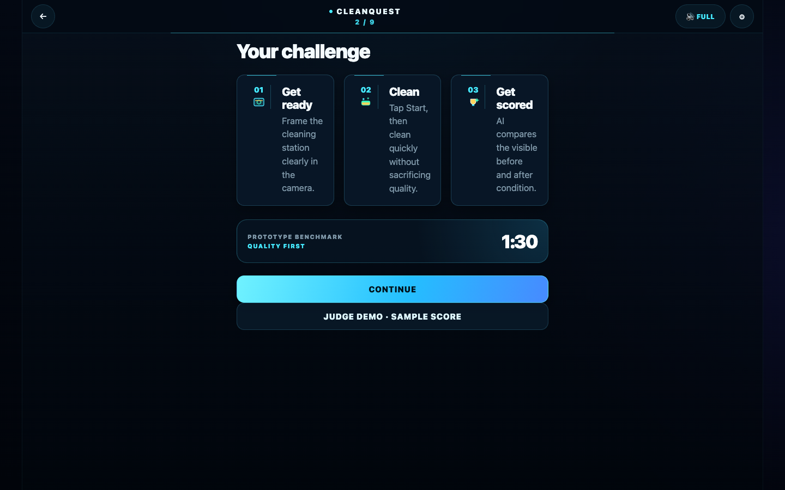
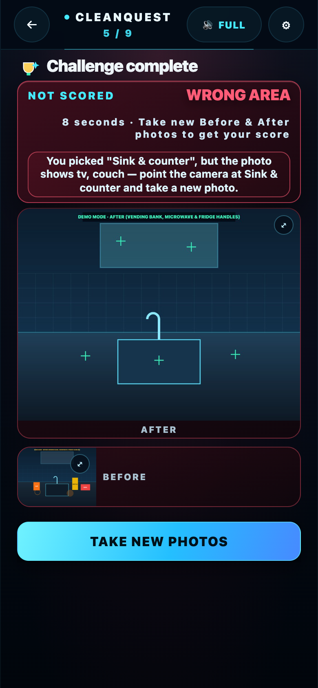
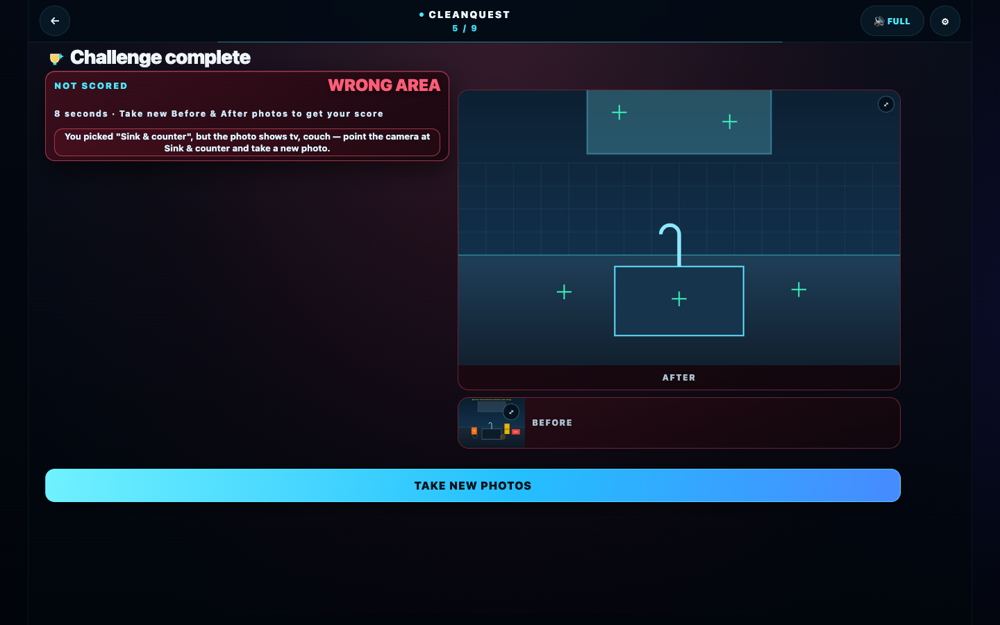

1 · Value Proposition — Who CleanQuest Serves & Why It Exists
The Core Problem: Commercial cleaners work alone at 2 a.m. across office towers, clinics, schools, and airports. When they do great work, nobody sees it; when a tenant complains the next morning, contractors burn hours driving site-to-site for re-checks, and training binders sit unopened in janitor closets.
| Stakeholder | Pain Point Today | CleanQuest Value Proposition | Live Product Surface |
|---|---|---|---|
| 1. The Cleaner Visibility, Skill & Portable Proof |
Good work is invisible; language barriers and complex software block adoption; no portable proof of quality when changing jobs or shifts. | Proves visible cleaning quality in under 90 seconds with two photos, zero typing, 44px glove-friendly controls, and full trilingual voice & UI (English, Mexican Spanish es_MX, and Polish PL). Every run builds an exportable inspection record (⬇ SAVE BACKUP JSON + ⬇ DOWNLOAD SPREADSHEET CSV), while the Daily Swipe Deck teaches pro technique one card at a time. |
Welcome Hub, Consent Read-Aloud, Station Check-In, Locked 1:30 Timer, 50/25/25 Scorecard, 10-Card Daily Deck, Inspection Log Export. |
| 2. Building Service Contractors & Facility Operators Proof Without Re-Checks |
"They didn't clean" tenant disputes, expensive supervisor re-check drives, and subjective manual inspections. | Objective, timestamped Before/After visual evidence and per-surface AI scorecards across 10 building sectors, 13 functional areas, and 28 cleaning spots. Scores are read-only (The system scores, nobody edits), with a 1-tap worker appeal flow (⚑ DISPUTE SCORE) that attaches a typed or spoken note without allowing anyone to alter a score. |
Station Taxonomy Picker, Per-Surface Scorecard + SAM Overlays, 1-Tap Dispute Panel, Geofenced Inspection Log. |
| 3. Industry Associations & Sponsors Training at the Moment of Work |
Paper SOP binders and classroom videos are forgotten on the shift floor; brands pay $15K–$55K at trade shows to reach crews indirectly. | Benchmark times, 8-fold microfiber technique, top-to-bottom wipe order, and surface-safe pH rules are taught right at the station and inside the Daily Swipe Deck. Sponsor logos appear on post-answer training cards and challenge leaderboards — never on the scorecard itself — preserving 100% scoring neutrality. | AI Loader Neutral Technique Tip, Daily Swipe Deck Post-Answer Sponsor Slot, Leaderboard Sponsor Crest. |
Closed-Loop Verification Thesis (Not a One-Shot Image Classifier)
2 · Deep Technical Architecture — Models, Providers, Pipeline & Audio
Architectural Principle: CleanQuest is a zero-build, offline-capable Vanilla JS application (index.html, app.js, styles.css, deck.js) that combines Rung 1 on-device edge perception (instant, zero network required) with Rung 2 cloud verification powered exclusively by Meta Muse Spark and SAM 3.1 models.
1 · Complete Models & Providers Matrix
| Layer & Provider | Exact Model ID / Endpoint | Where It Runs | How CleanQuest Uses It & Key Optimizations |
|---|---|---|---|
| Meta (Open Weights via Baseten Primary) | meta-models/muse-spark-open-1026meta-models/muse-spark-openinference.baseten.co/v1/chat/completions |
Serverless Cloud Proxy (Default, 0 User Keys) or Direct Baseten Key | Primary multimodal scorecard & season generator: Receives the downscaled 512px JPEG Before/After pair + strict JSON schema prompt (CLOUD_SCORING_PROMPT). Grades counter, glass, floor, and fixture (0–100, confidence floor 0.6), returns normalized box_2d: [ymin, xmin, ymax, xmax] surface polygons and a celebratory hype_line, and generates 14-day bi-weekly trilingual training cards. |
| Meta (Open Weights via Fireworks AI Failover) | accounts/fireworks/models/muse-spark-open(via serverless partner proxy) |
Serverless Cloud Proxy (Automatic Failover & Dual Benchmark) | High-availability failover & benchmark: In default auto mode, the proxy calls Baseten first and fails over to Fireworks AI only on timeout/5xx — cutting partner API calls by 50%. In dual mode (⚡ TEST & LOG TELEMETRY), both providers run in parallel and log token telemetry (`prompt_tokens`, `completion_tokens`, `total_tokens`) to the in-app Provider Run Log. |
| Meta Model API (Direct Cloud) | muse-spark-1.3https://api.meta.ai/v1/chat/completions |
Direct Browser → Meta API (Optional User Key) | Direct frontier scorecard verification: Uses the developer role prompt to grade per-surface cleanliness and return structured JSON scorecards when a direct Meta Model API key is configured. |
| Meta Segment Anything (SAM 3.1) | sam-3.1https://api.meta.ai/v1/responses |
Direct Browser → Meta API (with box_2d fallback) |
Surface segmentation overlays (getSamOverlays): Prompts sam-3.1 with counter, glass, floor, fixture on both Before and After frames to draw glowing color-coded surface outlines on the AFTER photo tile and full-screen comparison lightbox. When no direct Meta key is set, `getSamOverlays` seamlessly falls back to the box_2d coordinates returned by Muse Spark Open. |
| Meta Voice ASR | muse-voice-transcribe-1.0https://api.meta.ai/v1/asr/transcribe |
Direct Browser → Meta API (Multipart WAV) | Spoken inspection & dispute notes (transcribeVoiceNote): Captures microphone audio via MediaRecorder, resamples in-browser via OfflineAudioContext to 16 kHz mono PCM16 WAV (voiceBlobToWav), and sends a PUSH_TO_TALK multipart request. If offline or unkeyed, the raw audio recording stays attached locally so worker notes are never lost. |
| Google MediaPipe (On-Device Edge Vision) | EfficientDet-Lite0 (INT8 TFLite)@mediapipe/tasks-vision@0.10.14 |
100% On-Device in Browser (WebAssembly) | Station mismatch gate & object clearance (verifyStationEnvironment): Runs locally on Before/After frames (`scoreThreshold: 0.32`, `maxResults: 12`). Rejects wrong-room photos (e.g., TV/couch/bed when Sink & counter is selected) and webcam selfies (`person >= 25%` of frame) before any cloud call, and counts cleared vs. remaining surface items (`cup`, `bottle`, `bowl`, etc.). |
| On-Device Classical Vision Engine | compareFrames (`96×72`) +analyzeSurfaceZones (`3×3` grid) |
100% On-Device in Browser (Canvas 2D) | Luminance, scene alignment & 9-zone technique grading: Computes mean luminance (`avgLuminance`), structural Sobel edge correlation (`sceneMatch`), changed-pixel ratio, and per-zone residual clutter across a 3×3 grid to grade top-to-bottom wipe order and identify untouched zones (`top left`, `middle center`, etc.). |
| Offline Neural TTS & Gapless WebAudio Engine | Kokoro-82M (af_heart EN)Piper VITS ( es_MX-claude-high ES, pl_PL-gosia-medium PL) |
Pre-rendered Offline → 715 Static 24 kHz MP3s + WebAudio PCM | Zero-latency trilingual voice & gapless music: All 715 voice clips were synthesized offline (never calling a non-Meta cloud TTS at runtime). Every EN clip shares one af_heart voice and broadcast mastering chain (`asetrate=24000*1.03`, 3.2 kHz EQ, `-18 LUFS`). Per-screen music (`time-trial.mp3` on Timer, `daily-deck.mp3` on Deck) decodes once via `decodeAudioData` into a sample-accurate `AudioBufferSourceNode` loop (`loopStart = 0`, `loopEnd = buffer.duration`) with smooth `GainNode.setTargetAtTime` ducking (`0.5 → 0.12`) whenever the host speaks. |
2 · Deep Dive: The 6-Stage Verification & Scoring Pipeline
- Stage 1 — In-App Capture & Live 9-Zone Motion Sampling: Photos can only be captured live through
MediaDevices.getUserMedia(`assertInAppCaptureOnly` verifies no `` exists). While the locked 1:30 countdown runs, `sampleLiveRunActivity` samples a `36×27` luma grid every tick to track active wiping across the 9 zones and captures a `320×240` mid-run progress frame at the 45-second mark. - Stage 2 — 7-Reason Layman Diagnostic Gate (
NOT SCORED): Before awarding any score, `calculateLocalScore` runs a strict pre-flight gate. If a capture is invalid or unchanged, `scorable` is set to `false` (or `noVisibleChange: true`), cloud calls are skipped to save tokens, and the Results screen switches from `TOTAL SCORE` to **`NOT SCORED`** with one of 7 plain-language headlines (`WRONG AREA`, `PERSON IN PHOTO`, `TOO DARK`, `TOO MUCH GLARE`, `CAMERA MOVED`, `TOO FAR AWAY`, `NO CHANGE`), a one-sentence layman explanation of how to fix it, and a direct **`TAKE NEW PHOTOS`** or **`CLEAN & TAKE NEW PHOTO`** button (while hiding the 3 score bars, rank badge, and dispute panel). - Stage 3 — 50 / 25 / 25 Weighted Score Formula (
computeWeightedRunScore):- Visible Cleanliness (50% weight): Combines 9-zone surface improvement (`surfaceClearSignal`), zone coverage (`improvedZones / 9`), and object clearance (`clearedCount / beforeCount`), reconciled with the cloud `Muse Spark Open` per-surface scorecard when verified.
- Technique (25% weight): Measures top-to-bottom wipe order (`topOrderScore` across the top row vs. bottom row of the `3×3` grid) and even zone coverage (`zoneUniformityScore`).
- Time vs. Benchmark (25% weight): Awards `100%` within the 1:30 benchmark (`85–100%` of standard time), with a smooth linear deduction only when overtime.
- Stage 4 — Hushed-Directive Gate & 5-Tier Audio Choreography (
announceGameVerdict): If a run is unscorable or carries a surface directive (e.g., an untouched zone or remaining item), the `hushed` gate suppresses rank badges, confetti, and celebratory voice lines so the UI never praises an incomplete clean. On clean scorable runs, CleanQuest rolls the score counter (`0% → N%`), fires a 5-tier WebAudio musical stinger (`S-Rank ≥90%`, `A-Rank ≥80%`, `B-Rank ≥70%`, `C-Rank`, `D-Rank`), speaks the exact percentage via crossfaded `num-*` + `glue-00` clips, and chains the matching host reaction clip. - Stage 5 — Downscaled Cloud Verification & Surface Overlays (
getVerifiedScore+getSamOverlays): Both Before and After captures are downscaled on-device to `512px` max edge JPEG (`0.72` quality), cutting base64 payload size and vision token cost by **~56%**. Returned `box_2d` coordinates (or `sam-3.1` masks) are rendered onto both the AFTER evidence card and the interactive Side-by-Side / Shadow comparison lightbox. - Stage 6 — Two-Tier Zero-Token Bi-Weekly Season Engine (
generateLiveAiBonusCard): Every 14-day window (`Math.floor(Date.now() / (14 * 86400000))`), opening the Daily Deck checks Tier 1 (`localStorage`) and Tier 2 (serverless `ScriptProperties` shared cache) before calling `Muse Spark Open`. One batched prompt generates a localized Season Theme + 3 trilingual (`EN/ES/PL`) cards, and every subsequent play across the 2-week season costs **0 tokens**.
3 · Complete Screen-by-Screen Feature Tour (Mobile 390×844 & Desktop 1440×900)
Live Parity: Every screenshot below was captured directly from the current live build at Mobile (390×844) and Desktop (1440×900) viewports.
Part A · Trilingual Onboarding, Verbatim Consent Gate & Judge Demo


1 · Welcome Hub & 1-Tap Trilingual Switcher (EN / ES / PL)
- On-Screen Functionality: Instant 1-tap language selector (
🌐 ENGLISH,🌐 ESPAÑOL,🌐 POLSKI), primaryACCEPT THE CHALLENGECTA,DAILY DECKentry, and clear benchmark disclaimer ("AI-verified visible cleanliness & technique benchmark · never a certification · recognition & training only"). - Value Prop: Non-technical cleaners start in their native language in a single tap with zero typing, accounts, or menus.
- Tech Under the Hood: Persists language choice in
localStorage, re-renders all[data-i18n]DOM nodes in place, and plays the matching pre-rendered 24 kHz neural welcome intro (assets/audio/{en,es,pl}/welcome-intro.mp3) on first gesture while keeping the welcome background silent.


2 · First-Run Consent Gate & Verbatim Neural Read-Aloud
- On-Screen Functionality: Blocks first-time camera entry until the cleaner checks "I understand and agree" and taps
CONFIRM, with a prominent🔊 READ ALOUDbutton. - Value Prop: Establishes explicit worker trust upfront: work-surface photos only, faces are never identified (no facial recognition or biometrics), location is recorded only if shared, and scores are never used for discipline.
- Tech Under the Hood: Stores language-scoped consent in
cleanquest.consent.v1(switching languages re-presents consent in that language) and playsassets/audio/{en,es,pl}/consent-00.mp3rendered verbatim from the exact on-screenconsentBodystring.


3 · 3-Step Challenge Briefing & 1-Tap Judge Demo
- On-Screen Functionality: Concise 3-step visual summary (
01 Get ready → 02 Clean → 03 Get scored),1:30prototype benchmark card, primaryCONTINUECTA, and 1-tapJUDGE DEMO · SAMPLE SCORE. - Value Prop: Lets first-time cleaners grasp the rules in 5 seconds and lets evaluators experience the full AI loader + 93% S-Rank reveal in one tap without needing a physical sink.
- Tech Under the Hood: Auto-collapses on subsequent runs once
cleanquest.instructionsSeenis set;runJudgeDemo()routes sample Before/After illustrations through the animated loader and 5-tier audio fanfare while marking the runjudgeDemo: trueso it never pollutes the competitive leaderboard.
Part B · Commercial Station Check-In, Locked Timer, AI Loader & Scorecards


4 · Commercial Station Check-In & Voice Explainer
- On-Screen Functionality: First-visit "How the Challenge Works" modal with
📷 ALLOW CAMERA & START, live camera viewfinder with framing reticle, and dropdown selectors for Site, Building (10 sectors), Area (13 templates), Spot (28 stations), and optional Site Size. - Value Prop: Adapts scoring weights to the exact commercial surface being cleaned (e.g., Sink & counter vs. Mirror, glass & handles) with zero typing.
- Tech Under the Hood: Plays pre-rendered
camera-explain.mp3on first visit, bindsMediaDevices.getUserMedia(`environment` facing camera preferred), and loads station-specific scoring profiles (`SPOT_LOGIC_PROFILES`).


5 · Locked 1:30 Countdown, Live 9-Zone Sampler & Challenge Track
- On-Screen Functionality: Locked
1:30countdown + elapsed bar, live3×3zone grid overlay (`📸 LIVE · ZONES · 2 SNAPS`), Before/After capture indicators, optional Before-shadow ghost toggle, and 1-tapCOMPLETE CHALLENGE. - Value Prop: Prevents clock-pausing cheats, gives live visual feedback as zones are wiped, and auto-captures the After photo when
COMPLETE CHALLENGEis tapped. - Tech Under the Hood: Loops
assets/audio/time-trial.mp3gaplessly via a decoded WebAudio `AudioBufferSourceNode`, ducks music volume from `0.5` to `0.12` whenever 6–8s host hype clips fire, and samples `36×27` luma frames in real time.


6 · Animated Squeegee/Bubble AI Loader & Neutral Technique Tip
- On-Screen Functionality: Animated vector squeegee pass with rising bubbles, 3-step pipeline pills (
1 · Station Check → 2 · 9-Zone Scan → 3 · Muse Spark AI), and a 100% sponsor-free station-matched technique tip. - Value Prop: Turns the 1.5-second vision analysis into a Moment-of-Work micro-lesson while keeping the scoring flow strictly brand-neutral.
- Tech Under the Hood: Runs MediaPipe `EfficientDet-Lite0` object detection, `96×72` frame comparison, and the serverless `Muse Spark Open` cloud request concurrently while syncing localized tips to `state.checkin.areaKey`.


7 · 50/25/25 Verified Scorecard, SAM Overlays & 1-Tap Dispute
- On-Screen Functionality: Weighted `TOTAL SCORE` hero (`93%`), 5-tier rank badge (`🏆 S-RANK · SUPERSTAR · 93%`) + spoken transcript, maximized `AFTER` photo with glowing object/surface boxes + compact `BEFORE` reference (both tap-to-zoom into the comparison lightbox), plain-English `Clean` / `Technique` / `Time vs. benchmark` bars, and `⚑ DISPUTE SCORE`.
- Value Prop: Explains every point in plain words (e.g., "Wipe order and zone coverage, top to bottom") and gives cleaners a fair, immutable appeal record.
- Tech Under the Hood: Combines local + `Muse Spark Open` surface grades, draws `SAM 3.1 / box_2d` overlays, and chains WebAudio stingers with crossfaded Kokoro/Piper number & reaction clips.


8 · Layman NOT SCORED Diagnostic Screen (7 Plain-Language Reasons)
- On-Screen Functionality: When a photo cannot be scored, the hero switches from `TOTAL SCORE` to **`NOT SCORED`** with a 2–3 word plain reason (`WRONG AREA`, `PERSON IN PHOTO`, `TOO DARK`, `TOO MUCH GLARE`, `CAMERA MOVED`, `TOO FAR AWAY`, `NO CHANGE`), one clear sentence explaining how to fix it (zero AI/technical jargon), and a **`TAKE NEW PHOTOS`** or **`CLEAN & TAKE NEW PHOTO`** button.
- Value Prop: Non-technical users never see a confusing 0% score, a contradictory rank badge, or vague "REDO/RESCAN" labels — they know immediately why the photo didn't count and how to retake it.
- Tech Under the Hood: `verifyStationEnvironment` + luminance/framing gates set `scorable: false` and `scoreDirectiveKey`, hiding `#scoreBreakdownCard`, `#verdictSummaryBadge`, and `#disputePanel` while routing the primary CTA directly back to the camera.
Part C · Daily Swipe Deck, Dual Leaderboards, Inspection Log & Provider Telemetry


9 · Daily Swipe Deck: Contextual SVG Art, Instant Tap-Advance & Sponsor Slot
- On-Screen Functionality: 10-card daily round with 10 progress pips, contextual vector illustration matched to each question's topic, `⟵ ✘ DISAGREE` / `✔ AGREE ⟶` buttons & drag gestures, `✔ AGREE +100 XP` verdict stamp, plain-language explanation + recommended product type, and the `YOUR LOGO HERE` sponsor slot + `NEXT CARD →` all visible **above the fold**.
- Value Prop: Teaches real technique in 60 seconds a day while keeping the sponsor placement 100% visible above the fold on mobile phones.
- Tech Under the Hood: `deckMotifFor()` selects among 6 custom SVG dioramas (`product`, `cloth`, `dwell`, `technique`, `fixture`, `surface`); answering plays `deck-correct.mp3` / `deck-wrong.mp3` (`Correct!` / `Incorrect!`) over the gapless `daily-deck.mp3` loop; tapping the answered card or feedback advances immediately.


10 · Dual-Mode Leaderboard (⚡ SHIFT / 🃏 DECK), Size Filter & Spectator TV
- On-Screen Functionality: 1-tap toggle between `⚡ SHIFT CHALLENGE` and `🃏 DAILY DECK` standings, facility sq-ft size filter (`All sizes`, `Under 5k`, `5k–10k`, `10k–50k`, `50k+`), personal best summary + sponsor crest, top-10 ranked rows, and `?spectator=1` breakroom display mode.
- Value Prop: Recognizes top performers fairly within comparable facility sizes and never displays a bottom/shame list.
- Tech Under the Hood: Sorts eligible runs by weighted 50/25/25 score (tie-breaking on faster time), automatically excludes demo/practice runs, and auto-refreshes `?spectator=1` every 15 seconds.


11 · Geofenced Inspection Log & 1-Tap JSON / CSV Export
- On-Screen Functionality: Scrollable inspection log grouped by site coordinates (`Site 41.882, -87.628` or `Location not shared`), showing cleaner alias, timestamp, cleanliness score, AI provider/model provenance, and transcribed note — plus 1-tap `⬇ SAVE BACKUP` (JSON) and `⬇ DOWNLOAD SPREADSHEET` (CSV).
- Value Prop: Gives both the cleaner and the contractor an audit-ready, portable work record with zero paperwork.
- Tech Under the Hood: `recordInspection()` stamps each completed run into `cleanquest.inspection-log` (retaining 90 days via `pruneExpiredRecords`), and `buildInspectionCsv()` generates properly RFC-4180-quoted CSV spreadsheets in-browser.


12 · Settings, Cloud Routing Selector & Scrollable In-App Provider Run Log
- On-Screen Functionality: Host Voice selector (`Off`, `Chill`, `Full`), collapsible `⚙️ ADVANCED · Cloud routing` selector (`Baseten Primary → Fireworks Failover`, `Baseten Only`, `Fireworks AI Only`, `Dual Parallel`), scrollable in-app **Provider Run Log** (`30dvh` viewport showing verified run counts, cumulative tokens, model ID, score, and timestamp per call), `⚡ TEST & LOG TELEMETRY`, and `EXPORT LOG`.
- Value Prop: Lets judges and operators trigger a live dual-provider `Muse Spark Open` verification in one tap and scroll the token audit trail directly inside the app.
- Tech Under the Hood: `verifyLiveTelemetry()` invokes `callPartnerBackendProxy({ provider: "dual" })`, validates the returned JSON scorecards, and appends each provider's live token usage to `cleanquest.provider-log`.
4 · Post-Hackathon MVP Roadmap — Features to Build & Unlock Next
Why These Were Scoped to Post-Hackathon: To keep the hackathon experience razor-focused for non-technical cleaners (Check-In → 1:30 Run → Scorecard → Daily Deck → Leaderboard & Export), multi-worker crew management, supervisor admin panes, physical QR sticker printing, chemical dwell timer credits, and Victory Pose emotes are held for the post-hackathon rollout. Several of these modules already have working data models and helper functions scaffolded in app.js (currently hidden via CSS scope trim) and are ready to unlock and expand next:
| Post-Hackathon Feature | User & Business Value | Current Foundation in Code (app.js) |
Next Engineering Steps to Ship |
|---|---|---|---|
| 1. Cleaner Benchmark Passport & 44px Glove PIN Identity (MVP Screens 2 & 4) |
Gives cleaners a portable, shareable career credential with a 13-week consistency meter (Week N of 13 · On track — never called a certification) and opt-in employer sharing, protected by a 4-digit glove-friendly PIN pad with no email required. |
saveCleanerProfile, verifyCleanerPin, getConsistencyProgress, setEmployerShareOptIn, and shareCleanerPassport are implemented and tested in runPersonaSuite (hidden via #openPassportHubButton, #homePassportPanel). |
Unhide the Passport Hub card on Welcome/Records, add signed shareable verification links (via the serverless backend), and support multi-device PIN sync. |
| 2. Physical Version-2 QR Station Stickers & In-App QR Scanner (MVP Screen 5 & Admin Pane 12) |
Replaces dropdown picking with a 1-second wall-sticker scan at each sink, restroom, or classroom — proving physical presence at the exact station and unlocking prize eligibility automatically. | Standards-compliant Version-2 QR encoder (encodeQrVersion2L), payload parser (parseAreaQrPayload for CQ-QR-<LEAGUE>-<AREA>-<SPOT>), sticker printer (printAreaQrSticker), and BarcodeDetector modal (openQrScannerModal) are built in code. |
Add cross-browser jsQR canvas fallback for iOS WebKit browsers lacking native BarcodeDetector, unhide #scanAreaQrButton, and ship laminated PDF sticker sheets per registered site. |
| 3. Active +15s Chemical Dwell-Time Credit on Run Clock (MVP Screen 6) |
Rewards cleaners for letting disinfectant sit for its required wet-contact time instead of rushing to wipe it dry — adding +15s dwell credit that never penalizes their speed score. |
addDwellCredit() and state.checkin.dwellCreditSeconds are wired into timeBarExplanation() and computeTimeBenchmarkScore() (button #dwellCreditButton hidden for hackathon simplicity). |
Unhide #dwellCueBanner on stations that require disinfectant contact time, add visual bottle-spray confirmation via MediaPipe, and log dwell compliance per run. |
| 4. Crews (3–8 Cleaners), Solo Virtual Squads & Weekly Matchups (MVP Screen 4 & Admin Pane 13) |
Turns solitary night shifts into a team sport: 3–8 cleaners form a site crew (or solo cleaners join an automatic Virtual Squad), competing in weekly matchups with an 80% participation threshold and system-chosen Crew MVP. | createCrew, joinCrew, createVirtualSquad, recordCrewRun, getCrewParticipation, getCrewMVP, and getWeeklyMatchup are implemented and verified in the hermetic persona suite. |
Move crew state from browser localStorage to shared multi-device storage on the backend proxy so teammates across different phones see live squad totals. |
| 5. Supervisor Non-Discipline Pledge, Team Training Gaps & AI Shift Briefings (MVP Screens 11–15) |
Gives facility managers aggregate team training insights (top missed deck topics, shift time-bucket patterns) and 1-tap 5-day training pack assignments — gated behind a mandatory pledge that data is used for training and recognition only, never discipline. | acceptAdminPledge, getTeamTrainingGaps (strictly aggregate: canEditScores: false, exposesIndividualMistakes: false), assignTrainingPack, and generateAdminAiBriefing (Muse Spark Open with fingerprint cache) are coded in #adminDashboardPanel. |
Build role-separated supervisor authentication, multi-cleaner log aggregation across a site, and push-assigned 5-day training packs to crew devices. |
| 6. Victory Pose Silhouette Emotes (+5% Bonus) (MVP Screen 8) |
Adds a playful post-run game-show finish: cleaners strike one of 4 silhouette emotes (CHAMP V, FLEX, BOSS, DISCO) on camera for up to +5% bonus points. |
loadPoseLandmarker (MediaPipe 33-joint Pose Landmarker Lite + GestureRecognizer) and computeStyleScore are implemented in app.js (gate disabled and panel hidden during hackathon polish). |
Refine front-camera/rear-camera handoff after the After photo so cleaners can strike a pose hands-free with a 3-second countdown and audio cue. |
| 7. Native Spotify & Apple Music OAuth + Automatic Voice Ducking (Settings & Run Audio) |
Lets cleaners listen to their own personal playlists during a shift while CleanQuest automatically ducks music volume whenever the game-show host announces time callouts or verdicts. | Settings already includes zero-key Spotify/Apple Music embed drawer helpers (renderMusicStreamEmbed) and WebAudio gain ducking for the built-in tracks. |
Integrate Spotify Web Playback SDK (OAuth 2.0 PKCE) and Apple MusicKit JS v3 so external streaming playback ducks smoothly under host voice clips. |